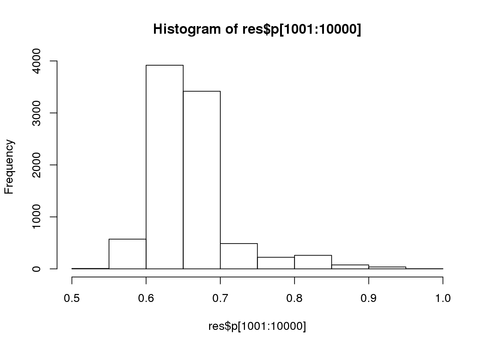

Last updated: 2017-03-09
Code version: e75cac0
First we’ll define the necessary functions and code:
# target functionc
target <- function(x) {
if (x < 0) {
return(0)
} else {
return(exp(-x))
}
}
# MCMC function
easyMCMC <- function(niter, startval, proposalsd) {
x <- rep(0, niter)
x[1] <- startval
for (i in 2:niter) {
currentx <- x[i - 1]
proposedx <- rnorm(1, mean = currentx, sd = proposalsd)
A <- ifelse(!target(currentx), 1, target(proposedx)/target(currentx))
if (runif(1) < A) {
x[i] = proposedx
} else {
x[i] = currentx
}
}
return(x)
}(a)
Now let’s test how different starting values effect the simulation results:
z1 <- easyMCMC(1000, 5, 1)
z2 <- easyMCMC(1000, 50, 1)
z3 <- easyMCMC(1000, 100, 1)
plot(z3, type = "l")
lines(z1, col = 2)
lines(z2, col = 3)We can see here that the starting values can effect how long it takes for the markov chain to reach its stationary distribution. The longer the simulation takes to reach stationary distribution, the less values are actually being sampled from the desired distribution.
(b)
z1 <- easyMCMC(1000, 5, 1)
z2 <- easyMCMC(1000, 5, 10)
z3 <- easyMCMC(1000, 5, 100)
plot(z1, type = "l")plot(z2, col = 2, type = "l")plot(z3, col = 3, type = "l")When the standard deviation becomes to large, too many proposed moves are rejected and you don’t actually allow the simulation to sample the the desired distribution properly.
(c)
Let’s redfine the target function, run the simulations with small standards of deviation and see what the target distribution looks like:
target <- function(x) {
return(as.numeric(x > 0 & x < 1) + as.numeric(x > 2 & x < 3))
}
z1 <- easyMCMC(10000, 3, 1)
z2 <- easyMCMC(10000, 3, 0.1)
hist(z1)hist(z2)When the standard deviation is too small, we again don’t sample the target distribution properly, but this time it’s because we aren’t moving far away enough from our initial value.
First we define the code for estimating allele frequencies:
# uniform prior
prior <- function(p) {
if ((p < 0) || (p > 1)) {
return(0)
} else {
return(1)
}
}
# likelihood of allele frequencies in the population based on a
# Hardy-Weinburg Equilibrium model
likelihood <- function(p, nAA, nAa, naa) {
return(p^(2 * nAA) * (2 * p * (1 - p))^nAa * (1 - p)^(2 * naa))
}
# allele frequencing sampling MCMC
psamplerMCMC <- function(nAA, nAa, naa, niter, pstartval, pproposalsd) {
p <- rep(0, niter)
p[1] <- pstartval
for (i in 2:niter) {
currentp <- p[i - 1]
newp <- currentp + rnorm(1, 0, pproposalsd)
A <- (prior(newp) * likelihood(newp, nAA, nAa, naa))/(prior(currentp) *
likelihood(currentp, nAA, nAa, naa))
if (runif(1) < A) {
p[i] <- newp
} else {
p[i] <- currentp
}
}
return(p)
}Now we can investigate different starting allele frequencies and proposal standard deviations to study algorithm convergence.
Differing starting allele frequency:
z1 <- psamplerMCMC(50, 21, 29, 10000, 0.05, 0.01)
z2 <- psamplerMCMC(50, 21, 29, 10000, 0.5, 0.01)
par(mfcol = c(2, 1))
maxz = max(c(z1, z2))
hist(z1[5001:10000], prob = T)
hist(z2[5001:10000], prob = T)Differing starting population sizes:
z1 <- psamplerMCMC(21, 29, 50, 10000, 0.5, 0.01)
z2 <- psamplerMCMC(60, 25, 15, 10000, 0.5, 0.01)
par(mfcol = c(2, 1))
maxz = max(c(z1, z2))
hist(z1[5001:10000], prob = T)
hist(z2[5001:10000], prob = T)Differing standard deviations:
z1 <- psamplerMCMC(21, 29, 50, 10000, 0.5, 5)
z2 <- psamplerMCMC(21, 29, 50, 10000, 0.5, 0.01)
par(mfcol = c(2, 1))
maxz = max(c(z1, z2))
hist(z1, prob = T)
hist(z2, prob = T)The biggest difference we can see is when we change the standard deviation. The algorithm takes longer to converge in this example, similar to in example 1, when the standard deviation is too large as most proposed “moves” are likely rejected.
Now we want to estimate the allele frequency and inbreeding coefficient by assuming a more complex model.
# define new, independent, uniform priors
fprior <- function(f) {
if ((f < 0) || (f > 1)) {
return(0)
} else {
return(1)
}
}
pprior <- function(p) {
if ((p < 0) || (p > 1)) {
return(0)
} else {
return(1)
}
}
# define new likelihood function for our new model
likelihood <- function(p, f, nAA, nAa, naa) {
fAA <- ((f * p) + (1 - f) * (p^2))^(2 * nAA)
fAa <- ((1 - f) * 2 * p * (1 - p) * f * p + (1 - f) * (p^2))^nAa
faa <- ((1 - f) * 2 * p * (1 - p) * f * (1 - p) + (1 - f) * ((1 - p)^2))^(2 *
naa)
return(fAA * fAa * faa)
}
# new MCMC simulation function
fpsamplerMCMC <- function(nAA, nAa, naa, niter, fstartval, pstartval, fproposalsd,
pproposalsd) {
f <- rep(0, niter)
p <- rep(0, niter)
f[1] <- fstartval
p[1] <- pstartval
for (i in 2:niter) {
currentf <- f[i - 1]
currentp <- p[i - 1]
newf <- currentf + rnorm(1, 0, fproposalsd)
newp <- currentp + rnorm(1, 0, pproposalsd)
A <- (pprior(newp) * likelihood(newp, newf, nAA, nAa, naa))/(pprior(currentp) *
likelihood(currentp, currentf, nAA, nAa, naa))
B <- (fprior(newf) * likelihood(newp, newf, nAA, nAa, naa))/(fprior(currentf) *
likelihood(currentp, currentf, nAA, nAa, naa))
if (runif(1) < A) {
p[i] <- newp
} else {
p[i] <- currentp
}
if (runif(1) < B) {
f[i] <- newf
} else {
f[i] <- currentf
}
}
return(list(f = f, p = p))
}Then lets run the simulation and view the posterir distributions:
res <- fpsamplerMCMC(50, 21, 29, 10000, 0.5, 0.5, 1, 0.1)
hist(res$f[1001:10000])hist(res$p[1001:10000])
We can find point estimates by taking the mean of these distributions after removing “burnin”:
mean(res$f[1001:10000])[1] 0.2895208mean(res$p[1001:10000])[1] 0.657712890% CIs for the mean parameters are:
quantile(res$f[1001:10000], c(0.05, 0.95)) 5% 95%
0.1617188 0.4118990 quantile(res$p[1001:10000], c(0.05, 0.95)) 5% 95%
0.5947752 0.7881999 We can solve the same problem using a Gibbs sampler.
# returns 1 with probability f, and 0 with probability 1-f
rbernoulli <- function(f) {
return(as.numeric(1 * runif(1) < f))
}
#' @param f inbreeding coefficient
sim_z <- function(f) {
# 100 is the size of the data set
return(rbinom(100, 1, f))
}
#' @param g genotypes
#' @param z inbred or not
update_p <- function(g, z) {
inbred <- g[z == 1]
outbred <- g[z == 0]
if (length(inbred) > 0) {
# count number of A and a alleles that are inbred
A_count1 <- sapply(inbred, function(x) {
ifelse(x == 0, 1, 0)
})
a_count1 <- sapply(inbred, function(x) {
ifelse(x == 2, 1, 0)
})
} else {
A_count1 <- 0
a_count1 <- 0
}
# count number of A and a alleles that are outbred
A_count0 <- sapply(outbred, function(x) {
if (x == 0) {
2
} else if (x == 1) {
1
} else {
0
}
})
a_count0 <- sapply(outbred, function(x) {
if (x == 1) {
1
} else if (x == 2) {
2
} else {
0
}
})
# print(A_count1) print(A_count0)
A_count <- sum(A_count1, A_count0)
a_count <- sum(a_count1, a_count0)
# print(allele_count)
return(rbeta(1, 1 + A_count, 1 + a_count))
}
#' @param z inbred or not
update_f <- function(z) {
# separate genotypes print(sum(z==0))
return(rbeta(1, sum(z == 1), 1 + sum(z == 0)))
}
#' @param niter the number of iterations
#' @param seed random number generator consistency
gibbs <- function(niter = 1000, seed) {
# set seed
set.seed(seed)
# resulting data
res <- list(p = numeric(niter), f = numeric(niter))
# AA -> 50, Aa -> 21, aa -> 29
g <- sample(c(rep(0, 50), rep(1, 21), rep(2, 29)))
# initialize
p <- runif(1)
f <- runif(1)
z <- sim_z(f)
res$p[1] <- p
res$f[1] <- f
# run algorithm
for (i in 2:niter) {
p <- update_p(g, z)
f <- update_f(z)
z <- sim_z(f)
res$p[i] <- p
res$f[i] <- f
}
return(res)
}Let’s see if we get the same result:
res <- gibbs(1000, 40)
mean(res$f[1001:10000])[1] NAmean(res$p[1001:10000])[1] NAhist(res$p)hist(res$f)sessionInfo()R version 3.3.2 (2016-10-31)
Platform: x86_64-pc-linux-gnu (64-bit)
Running under: Gentoo/Linux
locale:
[1] LC_CTYPE=en_US.UTF-8 LC_NUMERIC=C
[3] LC_TIME=en_US.UTF-8 LC_COLLATE=en_US.UTF-8
[5] LC_MONETARY=en_US.UTF-8 LC_MESSAGES=en_US.UTF-8
[7] LC_PAPER=en_US.UTF-8 LC_NAME=C
[9] LC_ADDRESS=C LC_TELEPHONE=C
[11] LC_MEASUREMENT=en_US.UTF-8 LC_IDENTIFICATION=C
attached base packages:
[1] stats graphics grDevices utils datasets methods base
loaded via a namespace (and not attached):
[1] backports_1.0.5 magrittr_1.5 rprojroot_1.2 formatR_1.4
[5] tools_3.3.2 htmltools_0.3.5 yaml_2.1.14 Rcpp_0.12.9
[9] stringi_1.1.2 rmarkdown_1.3 knitr_1.15.1 git2r_0.18.0
[13] stringr_1.2.0 digest_0.6.12 workflowr_0.3.0 evaluate_0.10 This site was created with R Markdown